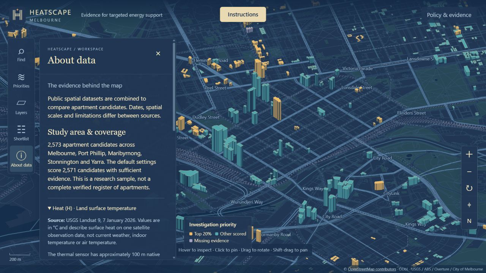
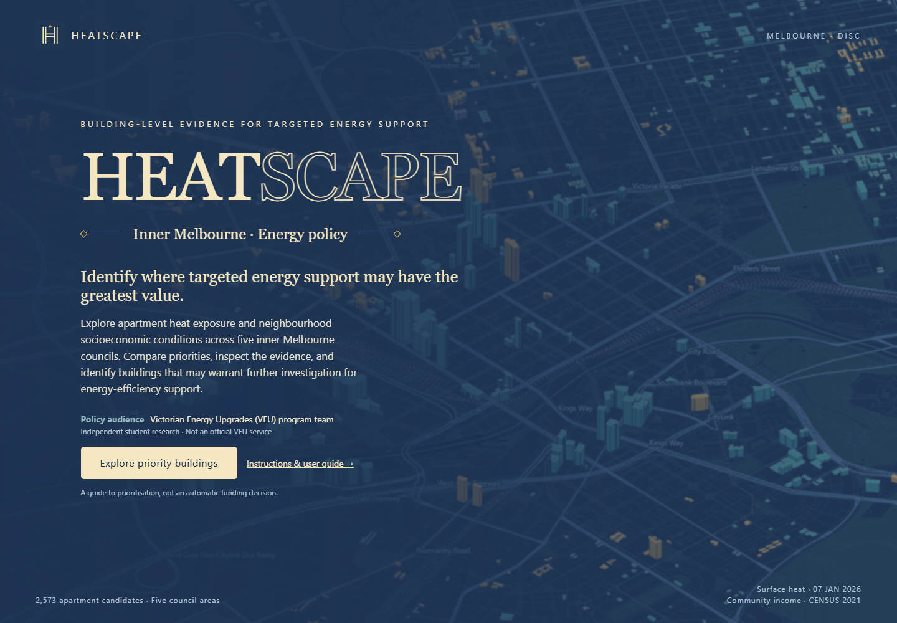
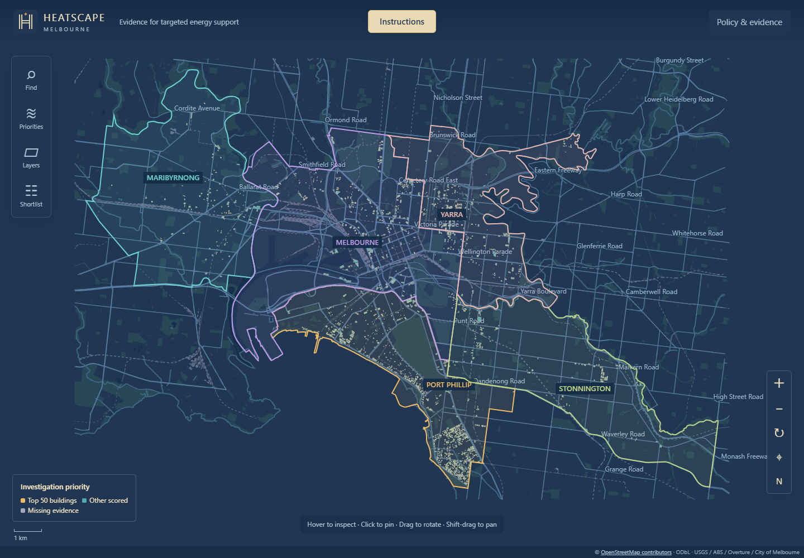
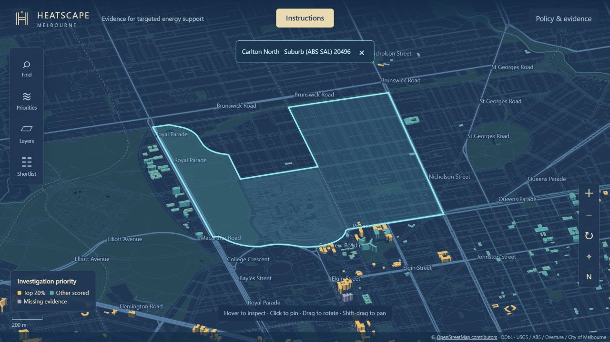
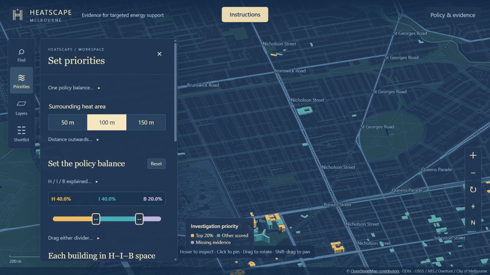
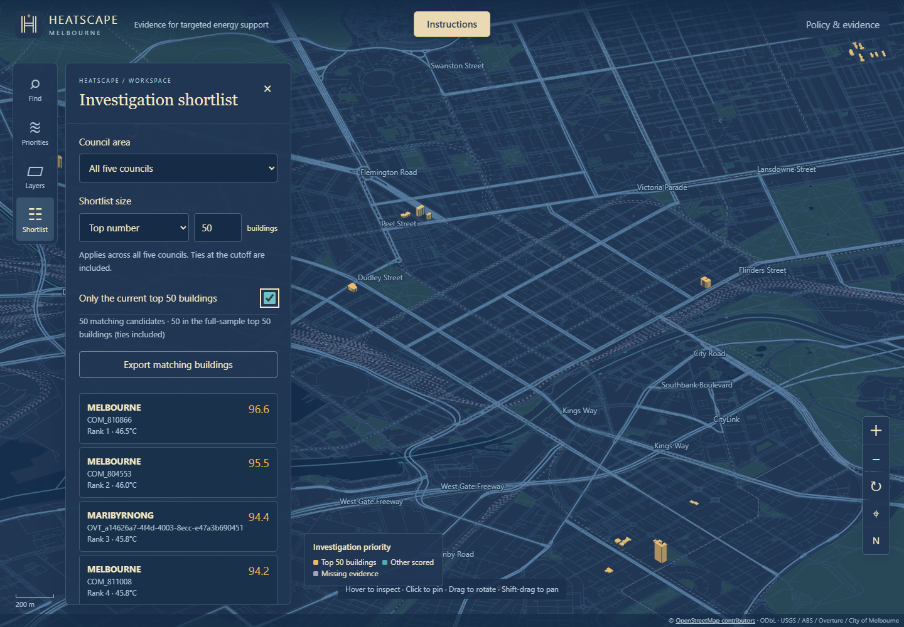

User guide · HIB policy balance
From map to informed investigation.
Learn the controls, understand each indicator, and compare policy priorities without confusing a shortlist with a funding decision.
About data

Select About data (ⓘ) in the left toolbar to read the dataset introductions. Expand each heading for sources, observation dates, units and limitations: Heat (H), Income (I), Buildings (B), area boundaries and OpenStreetMap context.
In Find, the short input hint reads “Search buildings or areas”. The full supported search types appear underneath: suburb, SA2 name/code, building ID and SA1 code. Suburb and SA2 results outline an area; building results pin its evidence. SA2 search does not change the SA1 income data used for scoring.
For formulas, use Priorities → Method & interpretation. Policy & evidence explains the intended policy use and research references.
01 / Start here
From introduction to investigation
HEATSCAPE helps policy teams compare apartment candidates across five inner Melbourne councils. It combines surrounding surface heat, community income context and building scale. It does not decide who receives funding.
- Choose Explore priority buildings on the introduction.
- Open Find and enter a suburb (for example Carlton North or North Melbourne), SA2 name/code, building ID or SA1 code.
- Choose a suburb or SA2 result to fit and outline its boundary with a light fill. The area name appears above the map; use × to clear it. Then click a building, or choose a building result to pin its evidence.
- Open Priorities to compare a common policy balance.
- Use Shortlist to review and export candidates for follow-up.

02 / Navigate the map
A three-dimensional workspace

OSM streets and apartment candidates start visible. Other buildings start hidden. The top-centred Instructions button returns to this guide. The map is a simplified height extrusion, not a detailed digital replica of roofs, terrain or facades.
| Action | Result |
|---|---|
| Drag / Shift-drag | Rotate / pan the map. On touchscreens, drag pans. |
| Scroll or + / − | Zoom in or out. |
| ↻ / ⌖ / N | Rotate one step / north-up, straight-down study-area view with all five council boundaries and names / return to the initial 3D city view. |
| Hover / click a building | Inspect temporarily / pin evidence so it stays open. |
| × or Escape | Close evidence; Escape then closes the panel. |
Only apartment candidates are selectable. Grey context buildings help orientation and do not receive scores in this system. Find provides an alternative to selecting small roofs. Area search uses ABS ASGS 2021 SAL and SA2 boundaries that intersect the study area. SAL approximates suburb/locality boundaries. Find no longer searches council names; council filtering remains in Shortlist. Area outlines may extend outside the five-council building coverage. Selecting an area does not filter candidates or recalculate ranks. Existing shortlist filters still apply to buildings. Searching “Calton North” also matches Carlton North.
03 / Read a building
What the evidence popup means
| Field | Meaning |
|---|---|
| Building ID / suburb / council | Stable project identifier, suburb (ABS SAL) and local government area; not necessarily a street address. Suburb and SA2 membership use a point inside the footprint. SA2 name and code are also in More evidence. |
| Priority /100 and rank | Composite score under the current policy settings; rank among all eligible candidates, not just the visible council. |
| Shortlist status | At or above your selected Top percentage or Top number cutoff across the full sample, including score ties. The default is Top 20%. Not funding eligibility. |
| Both heat and disadvantage high | Both H and I are in the upper 20% of their reference distributions. |
| Surrounding surface heat | Area- and distance-weighted single-date surface temperature outside the footprint. Not indoor or air temperature. |
| Low-income households · SA1 | Share of known-income community households below A$650 per week. Not the income of this building’s residents. |
| Height / footprint | Metres / square metres, used for relative building scale. Not occupant counts or usable roof area. |
| Heat / Income / Building points | Each percentile times its policy share. The three contributions add to priority. The formula below them reads: Each part = indicator percentile × its policy share. |
More evidence reveals SA1, height provenance, valid-area coverage, distance-weighted coverage, mean pixel uncertainty and spatial-check frequency. Missing means unavailable, never zero risk. Review flags identify data concerns; no flag does not confirm actual apartment use.

04 / Set priorities
One slider, three policy shares.
Grey help text starts collapsed to keep the panel compact. Click the small triangle next to a short prompt, such as Distance outwards…, to expand the explanation; click again to collapse it.
Open Priorities. H means Heat exposure; I means Low-income community context; B means Building scale. All buildings use the same policy balance. The coloured bar always totals 100%.
Default: H 40% · I 40% · B 20%
- Drag the first divider between gold H and teal I to transfer weight between Heat and Income. Building stays unchanged.
- Drag the second divider between teal I and lilac B to transfer weight between Income and Building. Heat stays unchanged. Building can receive 0–40%.
- Reset, beside the section title, restores H 40%, I 40%, B 20%. It resets the weights only, leaving your sampling extent, shortlist size and map selection unchanged.
Dividers cannot cross. At a zero-width segment, you can use Tab to focus its divider and the arrow keys to reopen it. Arrow keys move one percentage point; Shift + arrow moves five. Home / End move to the allowed limit.
Dragging recalculates scores and ranks for all eligible buildings. For H=80, I=60, B=50, default priority is 80×0.4 + 60×0.4 + 50×0.2 = 66. This is a policy preference, not a prediction of air-conditioning use. Reloading restores default settings.

05 / Choose the heat area
Follow the footprint, not a centre-point circle
The 50 m / 100 m / 150 m buttons choose how far to sample outwards from the whole footprint. The footprint interior is excluded. A different extent changes the local temperature and its relative position; it is not simply a display zoom.
Area weighting: a cell cut by the boundary contributes only its overlap. Distance weighting: locations closer to the footprint have greater influence. Both stay enabled in the interactive score.
Solid white outline = ground footprint. Dashed outline = sampling boundary. Grid = original 30 m project cells. Stronger gold shading = more distance influence; partial edge cells show overlap. Lilac = invalid temperature cells. These colours show weighting, not hotter or cooler temperatures.
The original thermal resolution is about 100 m, resampled to 30 m. Weighting makes boundary treatment more precise; it cannot create building-roof temperature accuracy. The exterior buffer can look rounded where the distance is large compared with the footprint.
06 / Explore the 3D plot
Evidence positions and a shortlist boundary.
The axis key is above the chart: X = Heat percentile (H), Y = Low-income percentile (I), Z = Building-scale percentile (B). Each axis runs from 0 to 100. The chart labels X, Y and Z in matching colours, with 0, 50 and 100 reference marks.
One point represents a scored candidate with complete indicators. Gold marks the selected shortlist, teal marks other scored candidates and the enlarged cream point is the selected building. Omitted cases are counted below the plot.
The purple plane marks the selected shortlist cutoff. It is not a weight surface. Changing policy shares tilts or moves it; choosing Top percentage or Top number moves the cutoff too. Building coordinates stay fixed when only weights or shortlist size change. A new sampling extent can change H and move points.
Drag to rotate, use arrow keys while the plot is focused, or choose Rotate view / Reset view. Click a point to pin that building on the map. The faint diagonal arrow indicates low to high combined evidence.
Indicator curves map observed temperature, income share, height and footprint area to percentiles. The selected building has a marker on each curve. B ranks the mean of height and area percentiles. These are comparison curves, not adjustable demand models.
07 / Change map layers
Separate appearance from calculation
Open Layers to toggle streets, candidates or grey other buildings. Colour by Investigation priority, Surface heat (H), Community income (I) or Building scale (B). Layer changes never change scores.
Priority uses gold for the current shortlist and teal for other scored candidates. Heat and income use the full observed range; Building scale uses 0–100 percentiles. Read the legend rather than comparing colours across different modes. Lilac means missing evidence.
08 / Review and export
Choose the size of your investigation list.
- Open Shortlist and choose Top percentage (default 20%) or Top number (starts at 100 buildings).
- Enter a whole number, then press Enter or leave the input to apply it. Percentages range from 1 to 100; building counts range from 1 to the eligible sample size.
- Switch on Only the current shortlist to hide candidates outside it. The label shows your chosen rule.
- Optionally choose one council to view its subset. The cutoff and ranks still refer to all five councils.
- Select a row to pin its building. Show more reveals additional rows; Export matching buildings downloads the currently matching records.
Score ties are included. Top 100 can produce more than 100 buildings if several have exactly the same cutoff score. The panel displays the actual selected count. For percentages, the requested count is rounded up: 10% of 2,571 requests 258 positions before ties.

The CSV includes suburb and SA2 names/codes and records the model version, shortlist mode/value/cutoff, score, full-sample rank, H/I/B in 0–1 units, policy weights as 0–1 fractions, point contributions, radius, height, footprint, income, coverage and spatial-check counts. Multiply fractions by 100 to read percentages. Export each setting you want to retain.
Method & interpretation in Priorities now contains the calculation steps directly: percentile ranking, building scale (including What building scale means), policy shares, shortlist rules, temperature conversion, quality screening, footprint sampling, income definition and limitations. Three spatial checks compare 50, 100 and 150 m extents, all with area and distance weighting, using your current shares and shortlist size. For example, 3/3 means the building is shortlisted at all three extents. Only checks with sufficient valid evidence enter the denominator, so it may be below three. Selection frequency is not a probability.
09 / Use the results responsibly
From candidate to verified evidence
A high score does not mean this building is unsafe or eligible for funding. It means it is a higher-priority candidate for further investigation based on heat and neighbourhood socioeconomic context, together with the chosen building-scale preference.
Before intervention, verify use, resident needs, building-level dwelling counts, ownership, equipment, energy performance, costs, savings and program requirements. Height and footprint are scale proxies; the project has no complete linked building household count. SA1 totals must not be treated as occupants of each building.
If the map does not load, reload and check the internet connection. If no results appear, clear council and shortlist filters and enable Apartment candidates. If a score is missing, inspect More evidence; do not interpret it as low priority. Share the public website URL, not a lone index.html file.